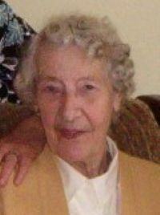

Mary Keeffe
1 Dec 1924 – 3 Sep 2016
Photo Gallery

Overview
Notes.
Marriage and Children
Married Peter Chalonor.
Known child (or Children): .
Timeline
1 Dec 1924: Birth in Thomastown, Kilkenny, Ireland.
: Marriage to Peter Chalonor in .
3 Sep 2016: Death in Thomastown, Kilkenny, Ireland
(age 91).
Historical Context
Notes.